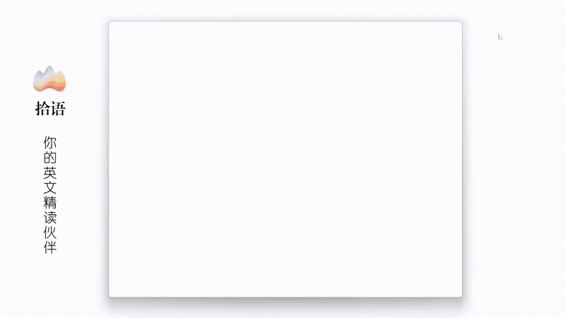

沉浸式阅读 + 智能标注 + AI 解析，一站式英语学习体验

直击外刊精读 & 原版书阅读的三大痛点
直接在阅读中划词标注，AI 实时给出语境释义和句子成分拆解。读完一篇，生词和句子自动沉淀进词库。读就是学，学不离读。
AI 句子成分解析用彩色标注把主干、从句、修饰成分逐层剥开，搭配结构总述和译文 — 相当于随身英语老师逐句精讲。
内置 FSRS 间隔复习算法，标注过的每个生词、句子都会按遗忘曲线自动安排闪卡复习。配合 TTS 朗读和一键跳回原文语境。
一款应用覆盖英语学习全流程
沉浸式 Markdown 阅读器，划词添加生词/句子，实时高亮标注
流式翻译，句子成分彩色标注，兼容 DeepSeek / OpenAI
一键分析文章结构，中英双语切换，缓存秒开
搜索、批量操作、来源跳转、TTS 神经网络语音朗读
FSRS 算法闪卡，4 级评分，键盘快捷操作
EPUB 按章节提取，OCR 图片识别 + AI 校正，一键导入
Tauri vs Electron 架构对比
| 对比项 | Electron 应用 | 拾语 (Tauri) |
|---|---|---|
| 渲染引擎 | 自带 Chromium (~120MB) | 系统 WebView (0 额外体积) |
| 后端运行时 | Node.js (~30MB) | Rust 原生编译，无运行时 |
| 安装包体积 | 80 – 150 MB | ~7 MB |
| 运行内存 | 200 – 400 MB | 50 – 100 MB |
| 安全模型 | Node.js 全权限 | Rust + 最小权限白名单 |
现代、高性能、安全